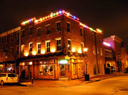

EstablishmentThe Fizz was established in 2012 by four guys interested in sports, burgers and good drinks. We wanted to have a friendly establishment downtown that served these principles. Our goal is to help bring diversity and fun to the Albuquerque area. |
 |
OwnersWe the owners of the Fizz always wanted to own a bar and grill near UNM. We want our bar and grill to be as friendly as possible. We love albuquerque and the International Ballon Fiesta and encourage patronage. |